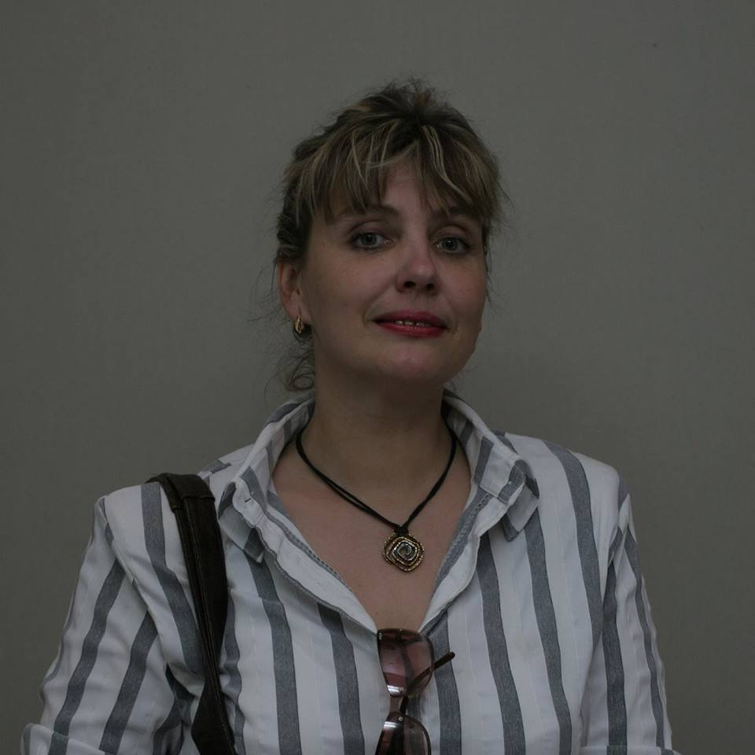

Школа развития мышления | ТРИЗ
Что такое ТРИЗ ?
ТРИЗ – теория решения изобретательских задач (автор ТРИЗ – Г.С. Альтшуллер). В настоящее время ТРИЗ-подходы используются для эффективного решения задач в различных предметных областях. ТРИЗ адаптирована даже до детей дошкольного возраста. Специалисты-ТРИЗ развивают мышление детей, делая его гибким, нестереотипным, что помогает ребенку выжить в динамичном быстроизменяющемся мире: решать нестандартные задачи и находить выход из непростых ситуаций. Сильное мышление – успех современного ребенка.
Квалификация и опыт

Чижевская Наталия Эдуардовна – Преподаватель ТРИЗ, Консультант по ТРИЗ, сертифицирована Международной ассоциацией ТРИЗ консультантов и разработчиков. Опыт работы в ТРИЗ-педагогике более 25 лет. Наталия Чижевская обучала ТРИЗ-подходам студентов БГАИ, БГЭУ, БГПУ, ИСЗ, АПО, а также работала со специалистами на курсах переподготовки и повышения квалификации. Проводит мастер-классы и семинары-тренинги.
Ее даже малолетние воспитанники – являются победителями международных конкурсов по решению творческих задач. Сегодня Наталия преподаёт в ГУО «ЦДОДиМ «Виктория». Также Наталия Чижевская является автором множества публикаций по ТРИЗ-педагогике.
Приглашаем в Школу мышления ТРИЗ
Дети от 4-х до 18 лет
Занятия в Школе мышления ТРИЗ научат:
- Находить выход из нестандартной ситуации, грамотно анализировать и решать проблемы.
- Мыслить системно и управлять воображением.
- Разрабатывать новые, полезные идеи.
- Ставить цели и достигать их.
- Разговаривать образно и логически.
- Общаться и приобретать уверенность в себе.
Современные ТРИЗ-технологии
Приглашаются на курсы - студенты, рекламисты, дизайнеры, специалисты по связям с общественностью, менеджеры, маркетологи, специалисты по работе с персоналом, педагоги и т.п.
Мы ответим Вам на следующие вопросы:
- Как видеть любую ситуацию системно?
- Как решать противоречия, препятствующие поиску нужного решения?
- Как прогнозировать наилучший результат?
- Как находить и устранять нежелательные эффекты?
- Как работать с ресурсами, имеющимися в системе?
и в конечном счёте:
- Как снимать психологическую инерцию мышления?
- Какими способами генерировать новые идеи?
- Как анализировать и эффективно решать проблемные ситуации?
Смело звоните Наталие +375 29 381 86 48